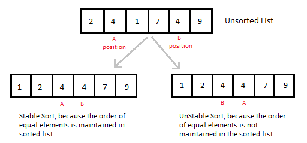
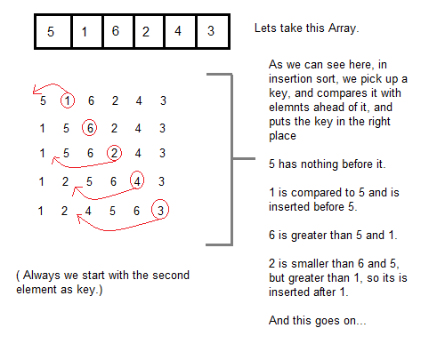

It is a simple Sorting algorithm which sorts the array by shifting elements one by one. Following are some of the important characteristics of Insertion Sort.


int a[6] = {5, 1, 6, 2, 4, 3};
int i, j, key;
for(i=1; i<6; i++)
{
key = a[i];
j = i-1;
while(j>=0 && key < a[j])
{
a[j+1] = a[j];
j--;
}
a[j+1] = key;
}
Now lets, understand the above simple insertion sort algorithm. We took an array with 6 integers. We took a variable key, in which we put each element of the array, in each pass, starting from the second element, that is a[1].
Then using the while loop, we iterate, until j becomes equal to zero or we find an element which is greater than key, and then we insert the key at that position.
In the above array, first we pick 1 as key, we compare it with 5(element before 1), 1 is smaller than 5, we shift 1 before 5. Then we pick 6, and compare it with 5 and 1, no shifting this time. Then 2 becomes the key and is compared with, 6 and 5, and then 2 is placed after 1. And this goes on, until complete array gets sorted.
#include <stdlib.h>
#include <iostream.h>
using namespace std;
//member functions declaration
void insertionSort(int arr[], int length);
void printArray(int array[],int size);
int main() {
int array[5]= {5,4,3,2,1};
insertionSort(array,5);
return 0;
}
void insertionSort(int arr[], int length) {
int i, j ,tmp;
for (i = 1; i < length; i++) {
j = i;
while (j > 0 && arr[j - 1] > arr[j]) {
tmp = arr[j];
arr[j] = arr[j - 1];
arr[j - 1] = tmp;
j--;
}
printArray(arr,5);
}
}
void printArray(int array[], int size){
cout<< "Sorting tha array using Insertion sort... ";
int j;
for (j=0; j < size;j++)
for (j=0; j < size;j++)
cout <<" "<< array[j];
cout << endl;
}
Worst Case Time Complexity : O(n2) Best Case Time Complexity : O(n) Average Time Complexity : O(n2) Space Complexity : O(1)